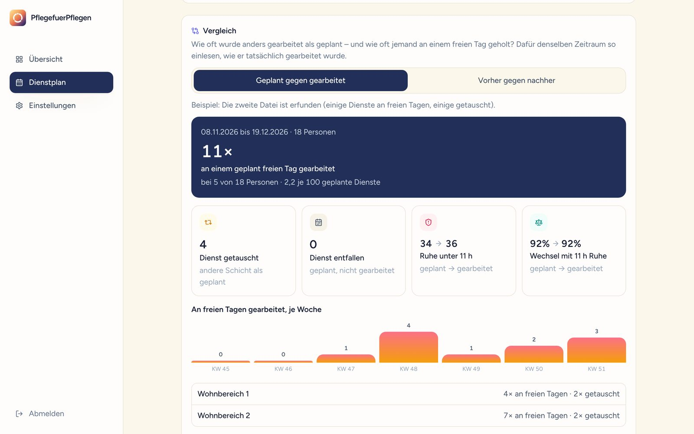
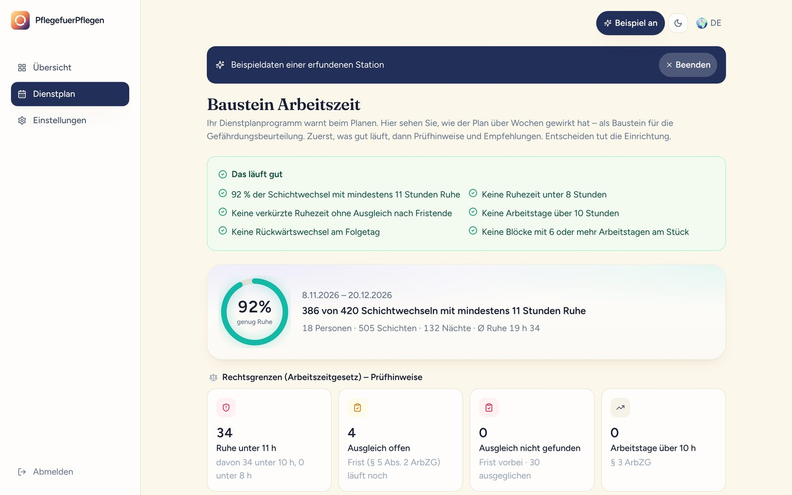
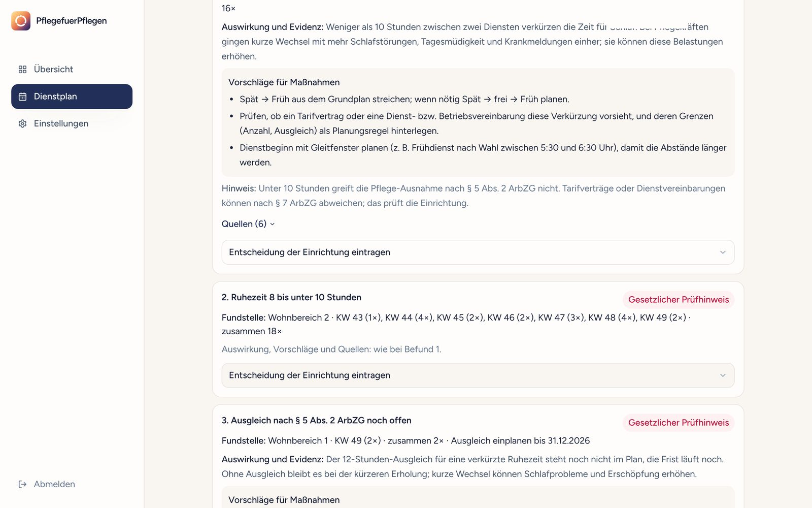
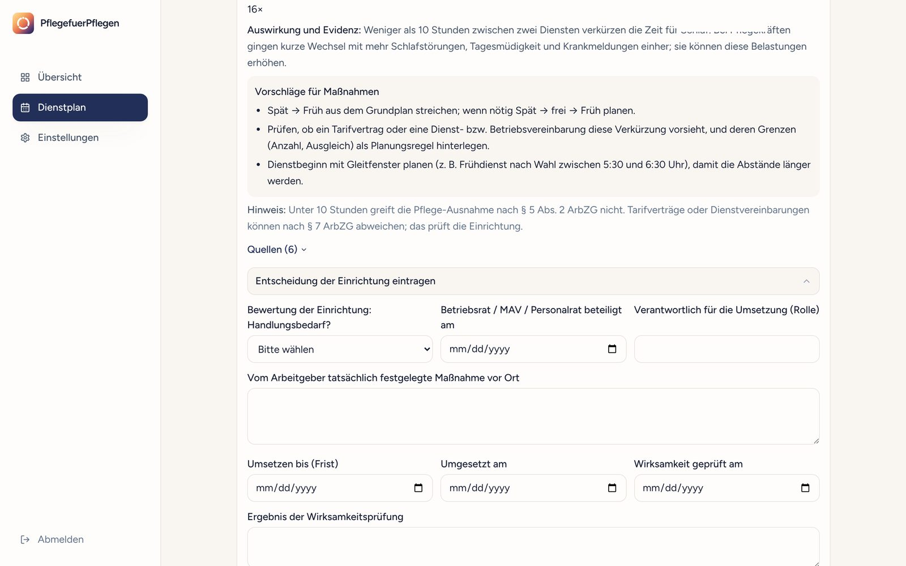
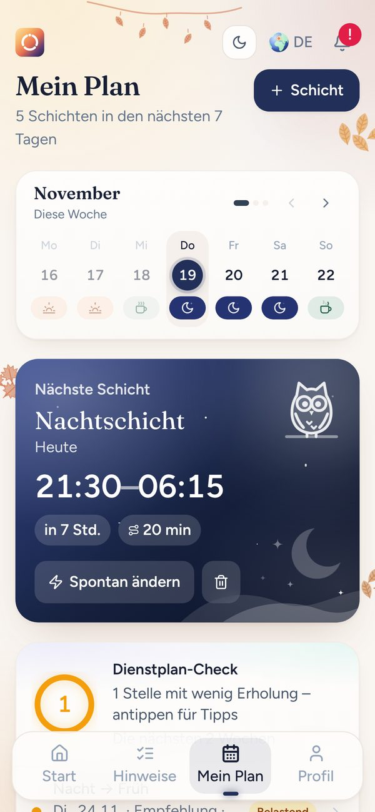
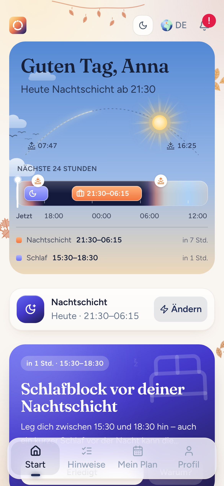
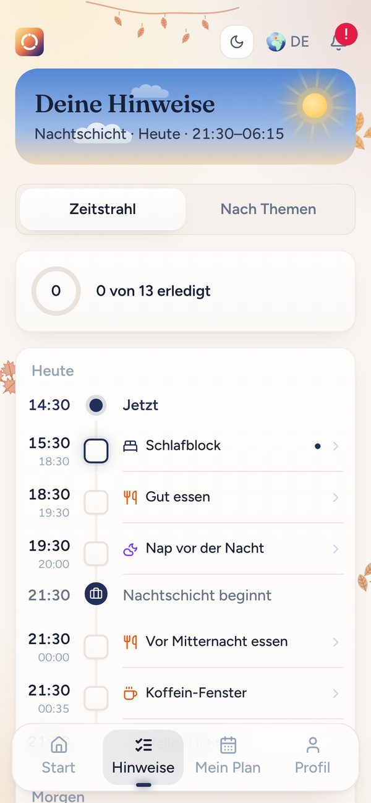

Für Pflegeheime und ihre Träger
Ihr Dienstplanprogramm warnt beim Planen. PflegefuerPflegen zeigt, was danach passiert ist.
Die Leitung sieht geplant gegen gearbeitet und vorher gegen nachher, als Baustein Arbeitszeit für die Gefährdungsbeurteilung. Die Pflegekräfte bekommen Hinweise zum nächsten Dienst. Einzelangaben sieht die Leitung nie.
2 Minuten 20 · mit Musik
Per Video oder am Telefon, mit Beispieldaten.
Für Leitungen
Lesen Sie zwei Dienstpläne ein: den geplanten und den gearbeiteten, oder einen von vorher und einen von nachher. Der Baustein zeigt, was sich im Alltag verändert hat. So sehen Sie auch, ob Ihr Ausfallkonzept wirkt, zum Beispiel ein Springerpool: Wird seltener aus dem Frei geholt? Gibt es weniger kurze Ruhezeiten?
Wie oft wurde an einem geplant freien Tag gearbeitet (Holen aus dem Frei), bei wie vielen Personen, in welcher Woche und welchem Bereich. Dazu: Kamen dadurch kurze Ruhezeiten dazu?
Zwei Zeiträume nebeneinander, je 100 Schichtwechsel gerechnet. Besser, schlechter oder gleich, für Ihre Wirksamkeitskontrolle nach § 3 ArbSchG.
Auf wie viele Personen entfallen die kurzen Ruhezeiten? Wer kommt hochgerechnet auf 48 Nächte im Jahr, die Schwelle für Nachtarbeitnehmer? Nur Anzahlen, nie Namen.

Vergleich in der App, Beispieldaten einer erfundenen Station
Die Idee
Beide Seiten arbeiten mit demselben Dienstplan. Jede bekommt daraus, was sie braucht.
für die Gefährdungsbeurteilung. Befunde, Quellen, Maßnahmen, PDF.
der Station
Schlaf, Pausen, Essen. Freiwillig und nur für sie selbst.
1Hilfe eins · Für Leitungen
Das Arbeitsschutzgesetz nennt die Arbeitszeit ausdrücklich als Quelle von Gefährdung (§ 5 ArbSchG) und verlangt Unterlagen zu Ergebnis, Maßnahmen und Überprüfung (§ 6 ArbSchG). Der Baustein liefert die Zahlen dafür und lässt Platz für Ihre Entscheidungen.
Sie brauchen nur Ihren Dienstplan, Ihr Team muss nichts installieren.
Excel oder CSV, so wie er ist: Liste oder Raster mit Kürzeln, mehrere Monate möglich. Gelesen im Browser, nichts wird hochgeladen.
Dienstplan.xlsx · 18 Personen · 503 SchichtenDer Bericht beginnt mit den Stärken Ihres Plans. Danach je Bereich und Kalenderwoche: Ruhezeiten unter 11, 10 und 8 Stunden, Ausgleich nach § 5 Abs. 2 ArbZG, Nacht vor Früh, Rückwärtswechsel, Nachtserien, lange Dienstfolgen. Nur als Gruppe ab fünf Personen.

Mit Fundstelle im Gesetz und Vorschlägen aus der Arbeitswissenschaft. Prüfhinweise, keine Urteile: Ob eine Ausnahme nach Tarifvertrag oder AVR greift, bewertet Ihre Einrichtung.

Handlungsbedarf, Maßnahme, Rolle, Frist, Beteiligung von Betriebsrat oder MAV, Wirksamkeit: direkt im Formular. Heraus kommt ein ausfüllbares PDF für Ihre Gefährdungsbeurteilung. Es ergänzt die übrige Beurteilung und ersetzt sie nicht.
Beispiel-Bericht ansehen
Ruhezeit, die § 5 ArbZG vorsieht. In der Pflege 10 h, mit Ausgleich.
ArbSchG: Arbeitszeit ist zu beurteilen und zu dokumentieren.
Personen je Gruppe. Darunter zeigt der Bericht nichts.
Dienstpläne hochgeladen. Alles wird im Browser gerechnet.
2Hilfe zwei · Für Pflegekräfte
Eigenen Plan eintragen dauert Sekunden. Die App zeigt, was gerade dran ist: Schlaf vor dem Frühdienst, Pausen im Nachtdienst, Essen zwischen zwei Diensten. Die Hinweise beruhen auf Studien zur Schichtarbeit, die Quellen stehen in der App.



Freiwillig · Die Leitung sieht keine Einzelangaben · Ergänzt die Dienstplangestaltung, ersetzt sie nicht
Der Dienstplan wird im Browser gelesen und nicht hochgeladen oder gespeichert. Was Pflegekräfte in der App eintragen, sieht die Leitung nie einzeln, und es geht an keine KI.
Ablauf
Für Seminare
Teilnehmende rechnen den Dienstplan ihres Hauses selbst nach und bereiten den Teil Arbeitszeit der Gefährdungsbeurteilung vor, bei der das Gremium mitbestimmt.
Der Dienstplan wird im Browser gelesen und nicht hochgeladen oder gespeichert. Ausgewiesen werden nur Gruppen ab 5 Personen, ohne Namen. Was Pflegekräfte in der App eintragen, sieht die Leitung nie einzeln, und es geht an keine KI.
Keine Rechtsberatung und keine Bewertung, ob eine Ausnahme nach Tarifvertrag oder AVR greift. Kein Medizinprodukt. Der Baustein deckt den Bereich Arbeitszeit ab und ersetzt nicht die übrige Gefährdungsbeurteilung.
Jordan Newton, Gründer · Köln
kontakt@pflegefuerpflegen.de · 01520 9461135